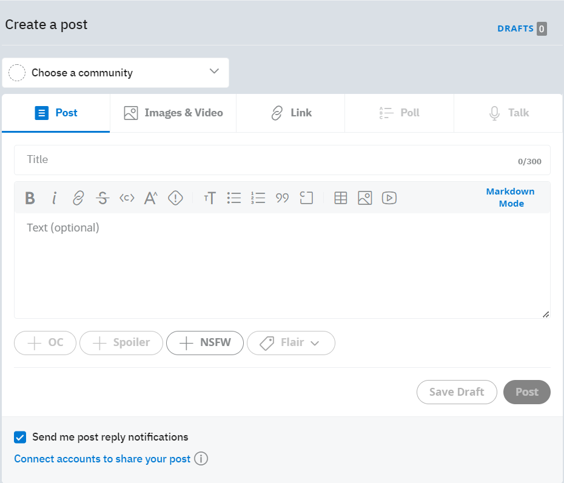

Usability Test
Task 3: Creating a Post
Creating a post is a very important asset in Reddit. It is quite literally the main essence of the site. Here I will show how to make a post
Accessing
In the homepage screen the user may find a '+' at the top. When pressed this brings up the post creation screen. Both memebers struggled for several minutes until i hinted trowards where to find the '+'. Both users said the reason for struggle were colors, size and location.
Post Creation
The next part is to make the post. At the top the user has an option to pick the subreddit they wish to post to. Then they have the option to start writing the body, put images, or links. Then the user may add the tags they feel neccessary, i.e NSFW, Spoiler or custom tags from the subreddit. Then they user may post it. Both users felt that the post section was satisfactory and found it easy and felt that it was flexible as to what they could to with the post

Results
Besides making it hard to access the page to create a post page. Luckily, the actual creation of a post is quite easy to do and gives the user enough creative control to play around with.
Other Pages
Other Tasks